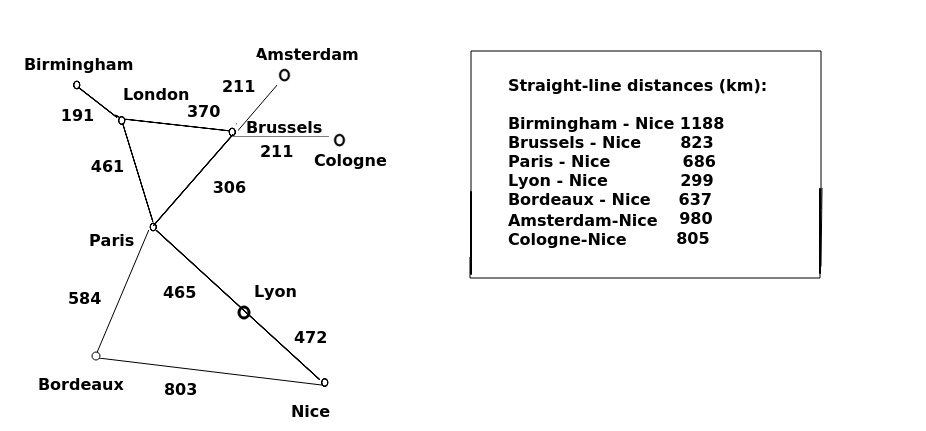

In the last topic we considered Dijkatra's algorithm as one approach to path finding. Now we will look at the A* (A-Star) algorithm, which can provide some efficiency improvements in circumstances in which we can estimate the distance to the end point.
One issue with Dijkstra is that we explore all surrounding nodes to our current node. The algorithm could be enhanced if we place more priority on those nodes which are closer to the destination. This can help us minimise the number of nodes we need to visit. For example, if we are trying to route from London to Nice, and London's surrounding nodes are Birmingham, Brussels and Paris, then Paris is closer to Nice than the other two, so could be prioritised such that we are more likely to select Paris as our current node after leaving London.
The A* algorithm allows us to do this. Each node in A* is given what is called an F score, which is the sum of the distance between the origin node and the current node (the same calculation as Dijkstra) - called the G score - plus an estimate of the distance between the current node and the destination - called the H score. This estimation is known as a heuristic, hence H.
How do we estimate the distance? This depends on the problem we are trying to solve. If we are routing by road, rail or foot, then we could choose the straight-line distance to the destination as this will be reasonably accurate, albeit a slight underestimate. If we are developing something like Pacman, where movement is restricted to horizontal and vertical directions (not diagonal), then it will be more accurate to use what is called the Manhattan distance - the distance to a place based on horizontal and vertical movement only, so called because in Manhattan, the streets (except for Broadway) are arranged in a grid and you can only move horizontally and vertically.
So to summarise, the equation which determines the score for a node in the A* algorithm is:
F = G + H
where G is the distance from the origin to the current node, and H is the heuristic: an estimation of the distance from the current node to the destination node.
An example is presented below, in which our task is to route from London to Nice via the shortest path. The distances (via road, in km) are shown on the graph. What happens if we choose A*?

First we consider the neighbour nodes of London: Birmingham, Brussels and Paris. What are the F scores of each? We add the G score (distance from London) to the H score (estimate of road distance to Nice, which will actually be the direct, straight-line distance). Doing this, we get:
Birmingham: G=191 + H=1188 ... 1379
Brussels: G=370 + H=823 ... 1193
Paris: G=461 + H=686 ... 1147
This produces Paris as the "winner".
Open list after visiting London:
[Paris, Brussels, Birmingham]
So we select Paris as the node with the lowest F score.
Now we are at Paris we have the choice between three unvisited nodes: Brussels, Bordeaux, or Lyon. Let's consider the F scores of each again:
Brussels: ... 1193 (we have already calculated this and the route via Paris is not shorter, so we do not update)
Lyon: G=461+465=926, H=299 ... 1225
Bordeaux: G=461+584=1045, H=637 ... 1682
Open list after visiting Paris:
[Brussels, Lyon, Birmingham, Bordeaux ]
The neighbours of Paris, i.e. Lyon and Bordeaux, are added to the open list. Even though Lyon is on the direct path, Brussels has a lower F score than Lyon, because the road distance from London to Brussels plus the straight-line distance from Brussels to Lyon is less than the road distance from London to Lyon plus straight-line distance from Lyon to Nice. So we pick Brussels.
Having picked Brussels, we add its neighbours (Amsterdam and Cologne) to the open list.
Open list after visiting Brussels;
[Lyon, Birmingham, Cologne, Amsterdam, Bordeaux ]
The next-lowest F score after Brussels is Lyon, so we pick Lyon next. Lyon's unexplored neighbour is Nice, which is our destination. So we calculate the F score of Nice and add it to the open list.
Nice: G=461+465+472 = 1398. H=0 ... 1398 (heuristic is 0 as we are at destination)
Open list after visiting Lyon:
[Birmingham, Cologne, Nice, Amsterdam, Bordeaux ]
Note that Nice, by this path, has a higher F score than Birmingham at 1379 or Cologne at 1386. Expressing this in a straightforward way, the road distance between London and Birmingham plus the straight-line distance between Birmingham and Nice is less than the road distance from London to Nice via Paris and Lyon. So we still have to explore Birmingham, and then Cologne, just in case there is a road direct from these cities to Nice via a straight-line path.
… We find no such route exists from these cities to Nice, as neither have any unexplored neighbours, so can move on.
Open list after visiting Birmingham and Cologne:
[Nice, Amsterdam, Bordeaux ]
We have Nice, Amsterdam and Bordeaux remaining on the open list. The F score of Nice is lower than any of the others, and Nice is the destination, so we are done.
Note how the use of the heuristic avoided us having to explore the nodes which are completely in the wrong direction, namely Bordeaux, and Amsterdam. A* favours the preferential selection of nodes which are nearer the target as measured by the heuristic, hence we explore Paris first whereas with Dijkstra we would explore Brussels first. With Dijkstra, we would end up considering Amsterdam (at 561km from London) because they are nearer London than Lyon is. By contrast with A*, the F score of Amsterdam would be 581+980 = 1561. As Amsterdam has higher F scores than Nice via the actual road route, they would never be explored. So A* explores less nodes. It will work better when the heuristic is close to the actual distance, so may not work so efficiently in mountainous terrain for example. An example of this is the way that Brussels was picked over Lyon early on in the algorithm. The straight-line distance from Brussels to Nice is considerably less than the road distance, because a straight line passes over the western Alps which the main roads avoid by taking a longer route to the west around the mountains.
Rewrite your path finder from the previous topic to use A* rather than Dijkstra. Use this graph (the London to Nice graph presented here) rather than the London to Munich graph from last time. You can set up the straight-line distances using a dictionary, e.g:
heuristic_distances = {
"Birmingham": 1188,
"Brussels": 823,
"Paris": 686,
... etc ...
}
This article by Amit Patel of Stanford University provides a comprehensive introduction to A*, Dijkstra and other pathfinding algorithms including a detailed comparison of the different approaches.